|
 Таверна - это жилая постройка, возводимая на своём
Таверна - это жилая постройка, возводимая на своём  участке, в которой можно спать и нанимать спутников второго (Т2) и третьего (Т3) уровней, а также сильных боевых спутников, таких как 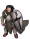 Оруженосец, 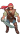 Фехтовальщик и 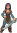 Сестра по оружию.
участке, в которой можно спать и нанимать спутников второго (Т2) и третьего (Т3) уровней, а также сильных боевых спутников, таких как 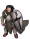 Оруженосец, 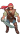 Фехтовальщик и 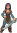 Сестра по оружию.
Также, таверна может быть построена для обеспечения жилья (необходимого интереса) спутникам, добывающим ресурсы без участия героя.
Для постройки требуются стройматериалы и специфические элементы мебели, а для найма ремесленных спутников необходимо иметь медные и золотые крылья соответствующих профессий.
Для спутников второго ранга важно учитывать, что на каждую профессию нужно свое крыло для найма спутника.
Например для найма 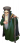 инженера, нужно  Медное крыло: инженерное дело, для найма 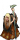 Алхимика – Медное крыло: алхимия и никакое другое.
Медное крыло: инженерное дело, для найма 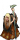 Алхимика – Медное крыло: алхимия и никакое другое.
Аналогично со спутниками третьего ранга.
| Здание | Размер | Материалы | Чертеж |
|---|---|---|---|
| |
6000 | 20 × 20 × 5 × 5 × 1 × 1 × 1 × |
Гавань Маликена. Маленький форт Сокольничих, Гвинлейн, Сокольничий |
Выбор мебелировки
Для того чтобы необходимые спутники присутствовали в возводимой Вами таверне, она должна обеспечивать требуемый для них уровень  комфорта и
комфорта и  престижа. Например, для возможности найма оруженосца необходимо чтобы у таверны показатель престижа равнялся 32, а чтобы в таверне был наем знатока камня необходим показатель комфорта 40.
престижа. Например, для возможности найма оруженосца необходимо чтобы у таверны показатель престижа равнялся 32, а чтобы в таверне был наем знатока камня необходим показатель комфорта 40.
Требуемые показатели  комфорта и
комфорта и  престижа в таверне обеспечиваются 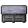 прилавком , 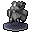 украшением и мебелью.
престижа в таверне обеспечиваются 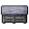 прилавком , 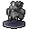 украшением и мебелью.
Также, у таверны есть параметр  Лидерство, дающий бонус строения и облегчающий наем спутников.
Лидерство, дающий бонус строения и облегчающий наем спутников.
-
 Комфорт рассчитывается по формуле:
Комфорт рассчитывается по формуле:
20 + (самое высокое значение комфорта одного из компонентов) * 0.8
-
 Престиж рассчитывается по формуле:
Престиж рассчитывается по формуле:
10 + (самое высокое значение престижа одного из компонентов) * 0.9
-
 Лидерство рассчитывается по формуле:
Лидерство рассчитывается по формуле:
10 + (самое высокое значение лидерства одного из компонентов) * 0.9
Округление значений производится по математическому правилу.
Считайте обстановку таверны внимательно! Чтобы потом не приходилось все разбирать, терять ресурсы и строить заново.
В общем случае, для возможности найма всех доступных спутников достаточно таверны с показателями  40,
40,  40 для региона Ланфар... и 45, 45 для Логова.
40 для региона Ланфар... и 45, 45 для Логова.
Рекомендуемые варианты
Т.к. для таверны в любом случае требуется прилавок, то для таверны в Ланфаре лучше всего будет использовать  Прилавок из кедра сложного типа, потому что он сразу дает требуемый уровень
Прилавок из кедра сложного типа, потому что он сразу дает требуемый уровень  комфорта 40. А
комфорта 40. А  Престиж можно варьировать за счет подбора нужного
Престиж можно варьировать за счет подбора нужного  украшения. Наиболее просты и дёшевы в изготовлении скульптуры и статуи из каменных блоков и дерева. Знамёна из ткани и статуи из металла - дорогие и неэффективные.
украшения. Наиболее просты и дёшевы в изготовлении скульптуры и статуи из каменных блоков и дерева. Знамёна из ткани и статуи из металла - дорогие и неэффективные.
Выбор места строительства
Присутствие спутников второго (Т2) ранга в Ланфаре выше, чем в Соколинии. Однако строить таверну в Соколинии бессмысленно, т.к. спутники третьего (Т3) ранга могут быть наняты только в Ланфаре.
Кроме того, спутники третьего ранга появляются в таверне, только если её построить в определенном регионе Ланфара. Т.е. не получится построить таверну, в которой они присутствовали бы все без исключения.
Однако спутники второго (Т2) ранга и боевые Оруженосец, Фехтовальщик и Сестра по оружию могут быть наняты в таверне в любом регионе Ланфара.
Выбирая место для строительства таверны в Ланфаре, учитывайте, для каких профессий вы захотите нанимать спутников в будущем. Возможно, вы не захотите строить две таверны, и проще будет построить одну в таком месте, в котором наем нужных спутников будет приемлемым.
Информация по присутствию спутников Т3
| Громыхающий лес ( - 15) | Воющие болота (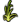 - 15) | Холмы Семи Зеркал ( - 20) | Шепчущий лес ( - 20) | Горы Коротких Клинков ( |
Великие равнины ( - 30) | Горы Возрождения ( |
Охотничий лес ( - 35) | Примечание | |
|---|---|---|---|---|---|---|---|---|---|
| Металл 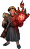 Мастер огня |
4% | 2% | 7% | 10% | 2% | В Горах Возрождения ( | |||
| Камень 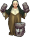 Знаток камня |
4% | 7% | 2% | 10% | |||||
| Древесина 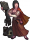 Отметчик деревьев |
7% | 2% | 10% | 2% | 7% | В Громыхающем лесу ( - 15) Таверну можно построить из материалы только от НПС, а в Шепчущем лесу ( - 20) нужны также конструкции из кедра | |||
| 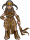 Хищница |
7% | 4% | 2% | 10% | В Воющих болотах ( - 15) понадобится всего 5 × | ||||
| 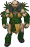 Сородич трав |
10% | 2% | 2% | 2% | 2% | 4% | 4% | Лучшее место - Воющие болота ( - 15) с единственным требованием — 5 × | |
| 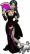 Портниха |
10% | 2% | 4% | 7% | 2% | Лучшее место — Громыхающий лес ( - 15), где нужны только материалы от НПС. | |||
| 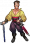 Обольститель |
2% | 4% | 10% | 7% | |||||
| 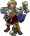 Визионер |
2% | 10% | 7% | 4% | 2% |
Рекомендуемые материалы
Примеры
Пример строительства таверны в Холмах Семи Зеркал ( - 20)
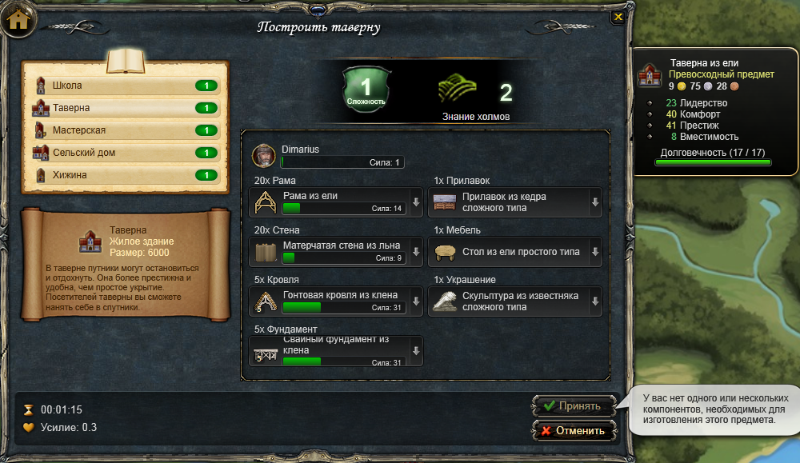